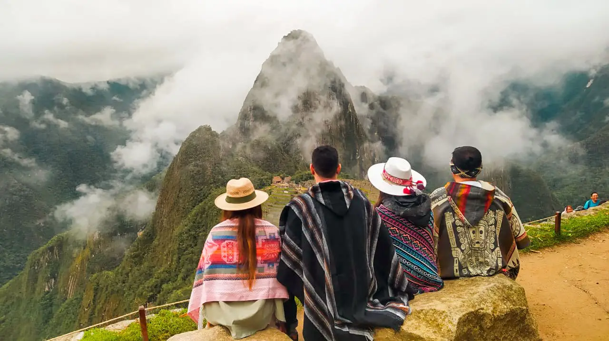
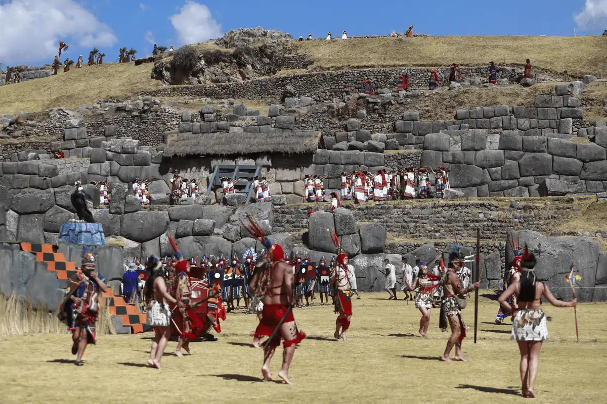
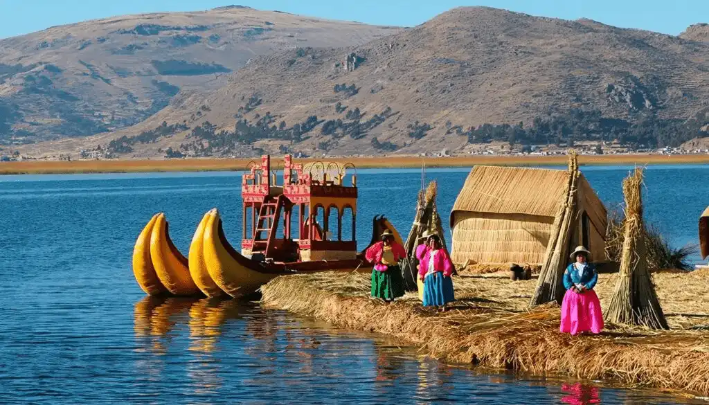
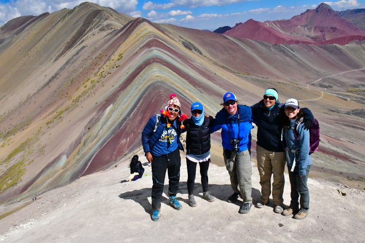

Machu Picchu Premium Tour
Includes round-trip transportation, entrance tickets, and bilingual guide.
Duration: 2 Days / 1 Night
Price: From $2,500 per person
Departure: Cusco, Daily
Experience: Embark on a curated journey to Machu Picchu aboard a panoramic-view train. Your private guide will unveil the secrets of the citadel, from the Temple of the Sun to the sacred Intihuatana. Enjoy a gourmet picnic with Andean flavors and receive a handcrafted souvenir to commemorate your visit.
Highlights: VIP train service, private guide, exclusive access zones
Signature Touch: Personalized photo album and luxury transfer options
✔️ Includes
- Private airport pick-up & drop-off in luxury vehicle
- Round-trip train to Machu Picchu in Vistadome / Hiram Bingham class
- 1-night stay at a 5★ hotel in Aguas Calientes
- Exclusive access with professional bilingual private guide
- Gourmet breakfast, lunch, and dinner included
- Entrance tickets to Machu Picchu (Circuit 2 - Classic Route)
- Luxury welcome kit & complimentary drinks
- 24/7 personalized concierge & support via WhatsApp
❌ Not Included
- International & domestic flights
- Travel & medical insurance
- Personal expenses & gratuities
- Additional services not specified in the program
Sacred Valley of the Incas Half-Day Tour
Private excursion with guide. Includes transport and entry.
Duration: 4 hours
Price: $150 USD
Departure: Flexible scheduling from Cusco
Experience: Discover the grandeur of Sacsayhuamán in a private setting. Your expert guide will walk you through the fortress's monumental architecture and spiritual significance. Enjoy a curated tasting of local snacks and a panoramic viewpoint reserved for our guests.
Highlights: Private access, cultural storytelling, artisan gift
Signature Touch: Optional drone footage and luxury SUV pickup
✔️ Includes
- Private luxury SUV or van with professional driver
- Bilingual private guide specializing in history & culture
- Visits to Pisac, Ollantaytambo, and Chinchero
- Private access to exclusive viewpoints
- Gourmet lunch at a top-rated restaurant in Urubamba
- Bottled water, snacks & luxury welcome kit
❌ Not Included
- Travel & medical insurance
- Additional meals or beverages
- Personal expenses & gratuities
Lake Titicaca Experience
From Cusco to Puno. Includes transport, guide, and visit to floating islands.
Duration: 2 days / / 1 Night
Price: From $1,800 per person
Departure: Cusco, Daily (early morning)
Experience: Travel in comfort from Cusco to Puno with premium seating and onboard refreshments. Explore the floating Uros Islands with a local host, then retreat to a lakeside eco-lodge featuring gourmet cuisine and stargazing by the fire. This is a journey for those who seek serenity, culture, and exclusivity.
Highlights: Private boat tour, cultural immersion, luxury lodging
Signature Touch: Evening storytelling with local elders and artisan workshop
✔️ Includes
- Private transfer Cusco – Puno – Cusco (luxury SUV/van)
- Private speedboat on Lake Titicaca
- Professional bilingual private guide
- Visits to Uros floating islands & Taquile with local host
- 1-night stay at a 5★ lakeside hotel or premium eco-lodge
- Gourmet breakfast, lunch, and dinner
- All entrance fees and permits
- Welcome amenities, bottled water & snacks
- 24/7 personalized concierge & WhatsApp support
❌ Not Included
- International & domestic flights
- Travel & medical insurance
- Personal expenses & gratuities
- Additional services not specified in the program
Rainbow Mountain Luxury Trek
Exclusive day trip to Vinicunca with private guide, gourmet meals, and premium transfers.
Duration: Full day
Price: $1,500 USD
Departure: 4:00 am from Cusco
Experience: Begin with a luxury SUV transfer and a sunrise breakfast prepared by a private chef. Embark on a guided trek tailored to your pace, with professional staff ensuring maximum comfort at high altitude. At the summit, enjoy panoramic photography sessions with a dedicated photographer capturing your exclusive experience.
Highlights: Private bilingual guide, luxury vehicle transfer, oxygen support available, curated photography moments
Signature Touch: Gourmet Andean picnic at a reserved viewpoint, complemented by a handwoven alpaca shawl as a personalized gift
✔️ Includes
- Private luxury SUV transport with blankets & oxygen available
- Professional private trekking guide
- Exclusive gourmet breakfast & lunch prepared on-site by private chef
- Entrance tickets to Rainbow Mountain & Red Valley
- Walking sticks, snacks, bottled water
- Optional horse rental (upon request)
❌ Not Included
- Travel & medical insurance
- Personal horse rental fees if chosen
- Gratuities